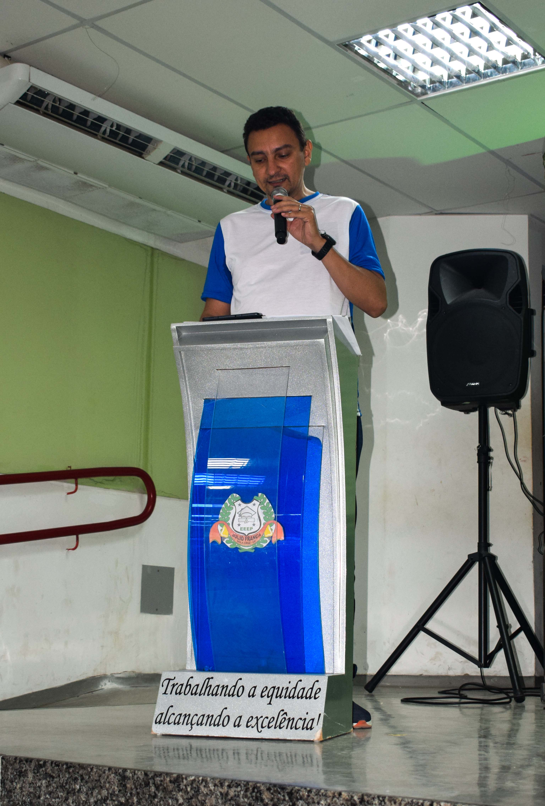

Nossa história
Memória da ABCiências
Este espaço reúne registros das edições da ABCiências,
valorizando estudantes, professores, escolas, avaliadores,
parceiros e todos aqueles que fazem parte da trajetória
da Mostra ABCCEL de Ciências.
Cada fotografia representa um pouco das descobertas,
encontros, apresentações, aprendizados e conquistas
vivenciados ao longo das edições.
Edição 2026
II ABCiências — 03 de novembro de 2026
Depois de meses de planejamento, a II ABCiências foi realizada
na EEEP Júlio França, em Bela Cruz – CE,
reunindo estudantes, professores, escolas, avaliadores,
parceiros e comunidade.
A edição contou com 52 projetos,
16 escolas, representantes de
5 municípios e
151 participantes.
A programação incluiu cerimônia de abertura,
apresentação e avaliação dos projetos,
formação para professores, momentos de integração
e cerimônia de premiação.
Cerimônia de abertura
O início de um dia dedicado à ciência
A abertura oficial reuniu representantes da ABCCEL,
estudantes, professores e convidados para marcar
o início da programação da II ABCiências.
Abertura 01
Substituir por foto da composição da mesa
Abertura 02
Substituir por foto dos hinos
Abertura 03
Substituir por foto das falas
Abertura 04
Substituir por registro geral da abertura
Apresentação dos projetos
Ciência, criatividade e protagonismo estudantil
Os estudantes apresentaram seus trabalhos,
compartilharam resultados, responderam às perguntas
dos avaliadores e mostraram a diversidade de temas
investigados nas escolas participantes.
Projetos 01
Substituir por foto de apresentação
Projetos 02
Substituir por foto de estandes
Projetos 03
Substituir por foto de estudantes
Projetos 04
Substituir por foto de visitação
Avaliação
Diálogo e reconhecimento do trabalho científico
A avaliação dos projetos foi um momento de diálogo
entre estudantes e avaliadores, contribuindo para
a valorização das pesquisas apresentadas e para
o desenvolvimento científico dos participantes.
Avaliação 01
Substituir por foto de avaliadores
Avaliação 02
Substituir por foto de avaliação dos projetos
Avaliação 03
Substituir por foto de diálogo com estudantes
Avaliação 04
Substituir por registro geral
Formação
Aprendizagem também para os professores
A programação da II ABCiências também contou
com momento formativo voltado aos professores,
fortalecendo a troca de experiências e a discussão
sobre práticas relacionadas à educação científica.
Formação 01
Substituir por foto da oficina
Formação 02
Substituir por foto dos professores
Formação 03
Substituir por foto do auditório
Formação 04
Substituir por registro geral
Premiação
Celebrando projetos, estudantes e professores
A cerimônia de premiação encerrou a II ABCiências
reconhecendo o trabalho desenvolvido pelas equipes
e celebrando o empenho dos estudantes e professores
ao longo de todo o processo de pesquisa.
Premiação 01
Substituir por foto da cerimônia
Premiação 02
Substituir por foto dos premiados
Premiação 03
Substituir por foto de medalhas ou troféus
Premiação 04
Substituir por foto coletiva
Bastidores
Pessoas e momentos que também fizeram a Mostra acontecer
A II ABCiências também foi construída nos bastidores:
na organização dos espaços, na recepção das equipes,
no trabalho dos colaboradores, nas conversas,
nos encontros e em muitos outros momentos
que ajudaram a tornar a edição especial.
Bastidores 01
Substituir por foto da organização
Bastidores 02
Substituir por foto de colaboradores
Bastidores 03
Substituir por foto de recepção
Bastidores 04
Substituir por registro espontâneo
Edição 2025
I ABCiências — o início da nossa história

Edição 2025
Primeira ABCiências
A primeira edição reuniu 49 projetos
e marcou o início de uma nova tradição
de incentivo à ciência, à criatividade
e ao protagonismo estudantil em Bela Cruz
e na região.
Ver álbum completo
Continue acompanhando
A ciência continua...
Novas fotografias e registros poderão ser adicionados
à galeria à medida que a memória da II ABCiências
for sendo organizada.
Acompanhe também o perfil oficial da ABCiências
no Instagram para ver mais registros da edição.
Acompanhar @abci.encias